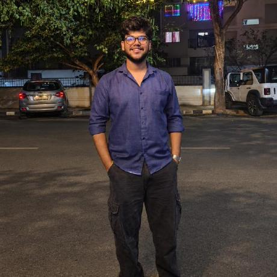
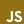

AI & PRODUCTIVITY01 / 04
Personal projectsource → clarity
Long conversations. Clear next steps.
My contributionBuilt a browser workspace with source-linked briefings, local AI, and saved reports.
HEY, I’M Vernit Gupta
I turn “what if” into things you can use.
A CS student building thoughtful web experiences.
A little logic, a lot of curiosity, and a playful touch.
Based in Bangalore, India
SCROLL TO EXPLORE01 / THINGS I’VE BUILT
Four projects. Plenty of curiosity.
A little of what I’ve been making.
Long conversations. Clear next steps.
My contributionBuilt a browser workspace with source-linked briefings, local AI, and saved reports.
A little less abstract. A lot more “aha”.
My contributionEvolved a first-year simulator into a React lab with six optimizers, guided lessons, and repeatable experiments.
Every signal. A clearer picture.
My contributionRebuilt a dashboard around persistent patient histories, reviewable alerts, and checked backup tools.
Curious rover. Reliable controls.
My contributionImplemented the engine API, serialized actions, run lifecycle, and collision recovery for our team’s simulator.
02 / ON THE WORKBENCH
Currently buildingComplex incidents.
A more traceable picture.
A training workspace for chemical-transport incidents. I’m developing saved input revisions, assessment history, evidence labels, and checked research handoffs.
Illustrative assessments today. Physical-model validation is ongoing.
03 / GSSOC & OPEN SOURCE
Learning from other people’s code.
Leaving something a little better.
4 selected contributions, all merged.Authored by me · Reviewed by maintainers · GSSoC-approved
Follow the commitsRetrieval & answer quality
A little more grounded.
Added a configurable relevance gate. When PDF passages are a weak match, the service returns a clear fallback before generating an answer.
Clearer model feedback
Room for “I’m not sure”.
Introduced an “Uncertain / Low Confidence” display state and threshold tests. The underlying model output stays unchanged.
Frontend & data visualization
Clarity at a glance.
Built a responsive analytics page with summary cards, Recharts visualizations, and sidebar navigation, using static demo data.
Validation before prediction
Check first. Predict second.
Added match-state validation and clearer feedback for completed innings and extreme scoring scenarios. No model retraining was involved.
04 / THE PERSON BEHIND THE PIXELS

CS student. Builder.
Always a work in progress.
I like turning “how does that work?”
into something I can build.
I’m a computer science student exploring web development and backend systems. I enjoy the whole journey: making an interface feel right, understanding the logic underneath, and improving the details along the way.
Most of my learning happens through projects, collaboration, and a fair bit of figuring things out. Here’s what that looks like:
From useful web apps to experiments that make an idea visible.
Personal projects, team builds, and GSSoC contributions.
Regular DSA practice. One problem, one lesson at a time.
05 / IN MY TOOLBOX
Tools I’m using and learning.
Always room for one more.

JavaScriptThe foundations I keep building on.
From a rough idea to a useful interaction.
APIs, persistence, and the details underneath.
Make a change. Check it. Share it.
Learning in public. Putting it into practice.
The GitHub version06 / GOOD THINGS START WITH A HELLO
A project, a collaboration, or a question you can’t leave alone.
I’d love to hear what you’re thinking.
A little more about my journey.
Find me on LinkedInCode, experiments, and little improvements.
Explore my GitHubThanks for stopping by my little corner of the internet.